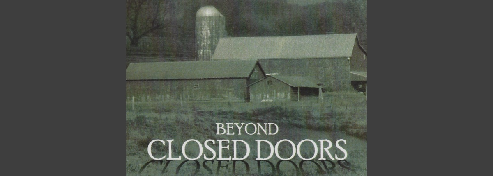

Argree or Disagree...Reject the Rhetoric and Embrace the Facts
“Beyond Closed Doors,” goes behind the rhetoric and politics of animal agriculture to confront issues in animal welfare that have the potential to affect all Americans. The film’s unique approach uses minimal graphic footage of factory farms and drive straight down the center of often polarizing issues. Dion closed doors takes you want to journey from The groundbreaking conference on animal sentencing London, to North Carolina where residents live in fear of the political power a big pork, And to Arizona where unscrupulous politicians are tempting to put factory farms beyond the reach of the law. Interviews with scientists, veterinarians, farmers, and animal welfare groups, illuminate important issues early covered in the mainstream press.
-
"I found Beyond Closed Doors to be both heartful and thoughtful, both compassionate and clear. If you have any interest at all in the welfare of the animals whose flesh and milk we eat, I think you'll love this film." -- John Robbins, author Diet For A New America, The Food Revolution, and Healthy At 100.
Professionals Featured in the Film
- Bernard Rollin Ph.D.
- Temple Grandin Ph.D.
- Dr. Marc Bekoff Ph.D.
- Emily Levine DVM MRCVS
- Vandana Shiva Ph.D.
- The Reverend Professor Andrew Linzey, Ph.D.
- Holly Cheever DVM
- Mike Appleby
- Steven Wise
- John Webster Ph.D.
- Mike Hogan
- Kari Nienstedt
- Adele Douglas
- Ann Daniels
- Bill Niman
- Nicolette Niman
- Gene Baur (Formerly Gene Bauston)
- Jeffrey Masson Ph.D.
- Joe Tomandl
- Nicholas D'Agostino III
Featured Music from the Film
Cal Scott
www.calscottmusic.com